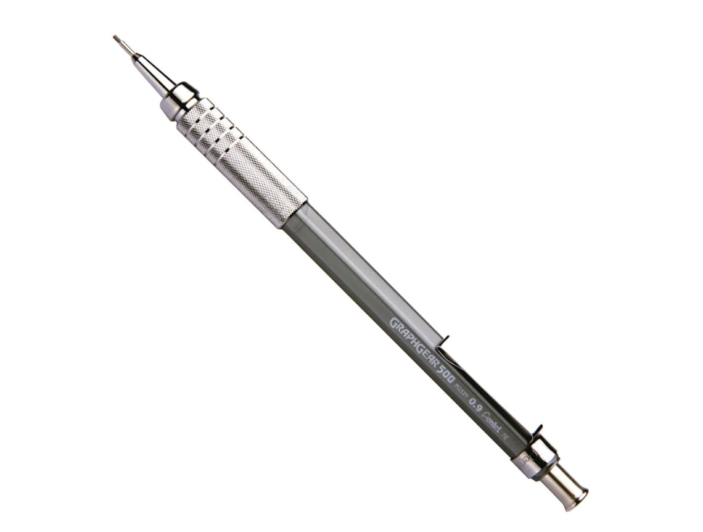

Descripción
El portaminas GraphGear (fabricado por la marca Pentel) es una línea de lápices mecánicos profesionales de alta precisión, diseñados especialmente para dibujo técnico, arquitectura, ingeniería, bocetos y escritura detallada.
Combinan un cuerpo metálico con un centro de gravedad bajo que ofrece un equilibrio perfecto y un control excepcional al trazar.
Materiales
- Metal cepillado.
- Aleaciones metálicas.
Contexto
El Pentel GraphGear es una de las líneas de portaminas técnicos y profesionales más populares del mundo, destacando principalmente en modelos como el GraphGear 500 y el GraphGear 1000.